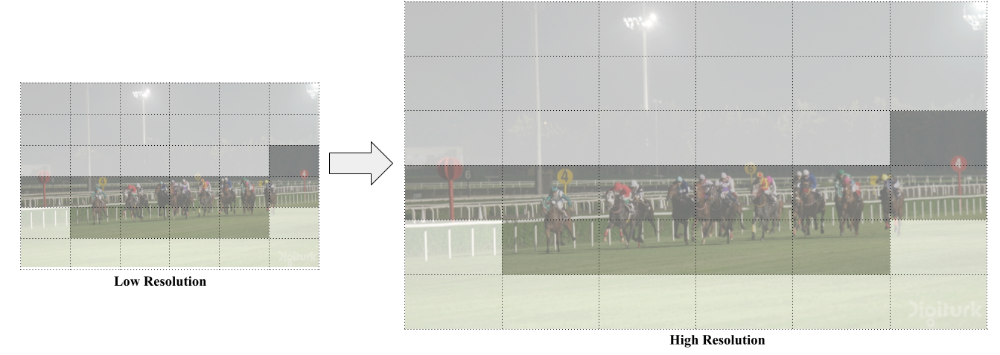
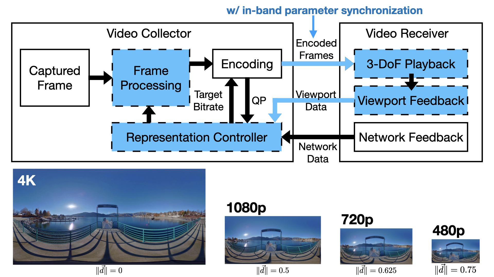

Publications
Mufeng Zhu, Mingju Liu, Cunxi Yu, Cheng-Hsin Hsu, Yao
Liu
Proceedings of the 16th ACM Multimedia Systems Conference (Full
Research Paper)
(
MMSys 2025)
Stellenbosch, South Africa, March 31 - April 4, 2025
LTS: A DASH Streaming System for Dynamic Multi-Layer 3D Gaussian Splatting
Scenes
[
paper]
Yuan-Chun Sun, Yuang Shi, Cheng-Tse Lee, Mufeng Zhu, Wei Tsang Ooi, Yao
Liu, Chun-Ying Huang, Cheng-Hsin Hsu
Proceedings of the 16th ACM Multimedia Systems Conference (Full Research Paper)
(
MMSys 2025)
Stellenbosch, South Africa, March 31 - April 4, 2025
Privacy-Preserving Multimedia Mobile Cloud Computing Using
Cost-Effective Protective Perturbation
[
paper]
Zhongze Tang, Zichen Zhu, Mengmei Ye, Yao Liu,
Sheng Wei
Proceedings of the 35th Workshop on Network and Operating
Systems Support for
Digital Audio and Video
(
NOSSDAV 2025)
Stellenbosch, South Africa, April 4, 2025
Joint Learning of Point Clouds and Motion Vectors for Volumetric Video
[
paper]
Cheng-Tse Lee, Yuan-Chun Sun, Yuang Shi, Mufeng Zhu, Wei Tsang Ooi, Yao
Liu, Chun-Ying Huang, Cheng-Hsin Hsu
Proceedings of the 17th International Workshop on Immersive Mixed and Virtual
Environment Systems
(
MMVE 2025)
Stellenbosch, South Africa, March 31, 2025
EVASR: Edge-Based Salience-Aware Super-Resolution for Enhanced
Video Quality and
Power Efficiency
[
paper]
[
source
code]
Na Li, Zichen Zhu, Sheng Wei, Yao Liu
ACM Transactions on Multimedia Computing, Communications, and
Applications
(
TOMM)
Accepted on December 2024
Dynamic 6-DoF Volumetric Video Generation: Software Toolkit and Dataset
[
paper]
[
project page]
Mufeng Zhu, Yuan-Chun Sun, Na Li, Jin Zhou, Songqing Chen, Cheng-Hsin Hsu,
Yao Liu
Proceedings of the 26th IEEE International Workshop on Multimedia Signal
Processing
(
MMSP 2024)
Lafayette, IN, October 2-4, 2024
RoIRTC: Toward Region-of-Interest Reinforced Real-Time Video Communication
[
paper]
[
source code]
Shuoqian Wang, Mengbai Xiao, Yao Liu
Proceedings of the 2024 IEEE International Conference on Multimedia and Expo
(
ICME 2024)
Niagara Falls, Canada, July 15-19, 2024
A Comparative Study of K-Planes vs. V-PCC for 6-DoF Volumetric Video
Representation
[
paper]
[
repository]
Na Li, Mufeng Zhu, Shuoqian Wang, Yao Liu
Proceedings of the 16th International Workshop on Immersive Mixed and Virtual
Environment Systems
(
MMVE 2024)
Bari, Italy, April 15, 2024
VertexShuffle-Based Spherical Super-Resolution for 360-Degree Videos
[
paper]
[
source code]
Na Li, Yao Liu
ACM Transactions on Multimedia Computing, Communications, and Applications
(
TOMM)
Accepted on February 2024
patchDPCC: A Patchwise Deep Compression Framework for Dynamic Point Clouds
[
paper]
Zirui Pan, Mengbai Xiao, Xu Han, Dongxiao Yu, Guanghui Zhang, Yao
Liu
Proceedings of the AAAI Conference on Artificial Intelligence
(
AAAI 2024)
Vancouver, Canada, February 20 - 27, 2024
A GPU-Enabled Real-Time Framework for Compressing and Rendering Volumetric
Videos
[
paper]
Dongxiao Yu, Ruopeng Chen, Xin Li, Mengbai Xiao, Guanghui Zhang, Yao
Liu
IEEE Transactions on Computers
Volume: 73, Issue: 3, March 2024
VQBA: Visual-Quality-Driven Bit Allocation for Low-Latency Point Cloud Streaming
[
paper]
Shuoqian Wang, Mufeng Zhu, Na Li, Mengbai Xiao, Yao Liu
Proceedings of the 31st ACM International Conference on Multimedia (Full
Research Paper)
(
MM 2023)
Ottawa, Canada, October 29 - November 3, 2023
VCRS: A Novel Approach to Virtual Reality Cycling for Balance Rehabilitation
[
paper]
Jing Jia, Julianne D'Avirro Humphrey, Parth Darji, Binsheng Zhang, Yao
Liu
Proceedings of the 1st ACM Workshop on Mobile Immersive Computing, Networking,
and Systems
(
ImmerCom 2023)
Madrid, Spain, October 6, 2023
Learning-based Homography Matrix Optimization for Dual-fisheye Video Stitching
[
paper]
[
source
code]
Mufeng Zhu, Yang Sui, Bo Yuan, Yao Liu
Proceedings of the ACM SIGCOMM Workshop on Emerging Multimedia Systems
(
EMS
2023)
New York, NY, September 10, 2023
EVASR: Edge-Based Video Delivery with Salience-Aware
Super-Resolution
[
paper]
[
source
code]
Na Li, Yao Liu
Proceedings of the 14th ACM Multimedia Systems Conference (Full
Research Paper)
(
MMSys 2023)
Vancouver, Canada, June 7 - 10, 2023


Security-Preserving Live 3D Video Surveillance
[
paper]
Zhongze Tang, Huy Phan, Xianglong Feng, Bo Yuan, Yao Liu, Sheng
Wei
Proceedings of the 14th ACM Multimedia Systems Conference (Full Research Paper)
(
MMSys 2023)
Vancouver, Canada, June 7 - 10, 2023
patchVVC: A Real-time Compression Framework for Streaming Volumetric Videos
[
paper]
Ruopeng Chen, Mengbai Xiao, Dongxiao Yu, Guanghui Zhang, Yao
Liu
Proceedings of the 14th ACM Multimedia Systems Conference (Full Research Paper)
(
MMSys 2023)
Vancouver, Canada, June 7 - 10, 2023
FFmpegSR: A General Framework Toward Real-Time 4K Super-Resolution
[
paper]
[
source code]
Na Li, Yao Liu
Proceedings of the 24th IEEE International Symposium on Multimedia
(
ISM 2022)
Naples, Italy + Virtual, December 5 - 7, 2022
Exploring Spherical Autoencoder for Spherical Video Content Processing
[
paper]
Jin Zhou, Na Li, Yao Liu, Shuochao Yao, Songqing Chen
Proceedings of the 30th ACM International Conference on Multimedia
(
MM 2022)
Lisbon, Portugal, October 10 - 14, 2022
Applying VertexShuffle Toward 360-Degree Video Super-Resolution
[
paper]
[
source code]
(
Best Paper Award)
Na Li, Yao Liu
Proceedings of the 32nd Workshop on Network and Operating Systems Support for
Digital Audio and Video
(
NOSSDAV 2022)
Athlone, Ireland, June 17, 2022
Learning to Guide Human Attention on Mobile Telepresence Robots with 360 Vision
[
paper]
Kishan Chandan, Jack Albertson, Xiaohan Zhang, Xiaoyang Zhang, Yao
Liu, Shiqi Zhang
Proceedings of the 2021 IEEE/RSJ International Conference on Intelligent Robots
and Systems
(
IROS 2021)
Prague, Czech Republic, September 27 - October 1, 2021
A Smartphone Thermal Temperature Analysis for Virtual and
Augmented Reality
[
paper]
Xiaoyang Zhang, Harshit Vadodaria, Na Li, Kyoung-Don Kang,
Yao
Liu
Proceedings of the 3rd International Conference on
Artificial Intelligence and Virtual Reality
(
AIVR 2020)
Virtual/Online Event, December 14-18, 2020
SphericRTC: A System for Content-Adaptive Real-Time 360-Degree
Video
Communication
[
paper]
[
source
code]
Shuoqian Wang, Xiaoyang Zhang, Mengbai Xiao, Kenneth Chiu,
Yao
Liu
Proceedings of the 28th ACM International Conference on
Multimedia (Full
Research Paper)
(
MM 2020)
Seattle, WA, October 12-16, 2020

AdaP-360: User-Adaptive Area-of-Focus Projections for
Bandwidth-Efficient
360-Degree Video Streaming
[
paper]
[
source code]
Chao Zhou, Shuoqian Wang, Mengbai Xiao, Sheng Wei, Yao
Liu
Proceedings of the 28th ACM International Conference on
Multimedia (Full
Research Paper)
(
MM 2020)
Seattle, WA, October 12-16, 2020
Guided 360-Degree Visual Perception for Mobile
Telepresence Robots
[
paper]
Kishan Chandan, Xiaohan Zhang, Jack Albertson, Xiaoyang Zhang,
Yao Liu, Shiqi Zhang
The RSS-2020 Workshop on Closing the Academia to Real-World Gap in Service
Robotics
(
ARWGAP
2020)
Online, July 13, 2020
QuRate: Power-Efficient Mobile Immersive Video Streaming
[
paper]
(
Best Paper Award)
(
3rd Place in DASH-IF Excellence in DASH Award)
Nan Jiang, Yao Liu, Tian Guo, Wenyao Xu, Viswanathan
Swaminathan, Lisong Xu, Sheng Wei
Proceedings of the 11th ACM Multimedia Systems Conference
(
MMSys 2020)
Istanbul, Turkey, June 8-11, 2020
Understanding the Ecosystem and Addressing the Fundamental Concerns of
Commercial MVNO
[
paper]
Yang Li, Jianwei Zheng, Zhenhua Li, Yunhao Liu, Feng Qian, Sen Bai, Yao
Liu, Xianlong Xin
IEEE/ACM Transactions on Networking
Volume:28, Issue:3, 2020
LiveDeep: Online Viewport Prediction for Live Virtual Reality Streaming Using
Lifelong Deep Learning
[
paper]
Xianglong Feng, Yao Liu, Sheng Wei
Proceedings of the 2020 IEEE Conference on Virtual Reality and 3D User
Interfaces (VR)
(
VR 2020)
Atlanta, GA, March 22-26, 2020
Poster: FFmpeg360 for 360-Degree Videos: Edge-Based Transcoding, View Rendering,
and Visual Quality Comparison
[
paper]
Yao Liu, Chao Zhou, Shuoqian Wang, Mengbai Xiao
Proceedings of the 4th ACM/IEEE Symposium on Edge Computing
(
SEC 2019)
Washington DC, November 7-9, 2019
Mengbai Xiao, Shuoqian Wang, Chao Zhou, Li Liu, Zhenhua Li, Yao
Liu, Songqing Chen, Lucile Sassatelli, Gwendal Simon
Proceedings of the 27th ACM International Conference on Multimedia
(Reproducibility
Paper)
(
MM 2019)
Nice, France, October 21-25, 2019
The Cask Effect of Multi-source Content Delivery: Measurement and Mitigation
[
paper]
Xi Chen, Minghao Zhao, Xinlei Yang, Zhenhua Li, Yao Liu, Zhenyu
Li, and Yunhao Liu
Proceedings of the 39th IEEE International Conference on Distributed Computing
Systems
(
ICDCS 2019)
Dallas, TX, July 7-9, 2019
An In-depth Study of Commercial MVNO: Measurement and Optimization
[
paper]
Ao Xiao, Yunhao Liu, Yang Li, Feng Qian, Zhenhua Li, Sen Bai, Yao
Liu, Tianyin Xu, Xianlong Xin
Proceedings of the 17th ACM International Conference on Mobile Systems,
Applications, and Services
(
Mobisys 2019)
Seoul, Korea, June 17-21, 2019
A Quantitative and Comparative Study of Network-Level Efficiency for Cloud
Storage Services
[
paper]
Zhenhua Li, Yongfeng Zhang, Yunhao Liu, Tianyin Xu, Ennan Zhai, Yao
Liu, Xiaobo Ma, Zhenyu Li
ACM Transactions on Modeling and Performance Evaluation of Computing Systems
(
TOMPECS)
Volume 4 Issue 1, March 2019
Mengbai Xiao, Shuoqian Wang, Chao Zhou, Li Liu, Zhenhua Li, Yao
Liu, and Songqing Chen
Proceedings of the 26th ACM International Conference on Multimedia (Full
Research
Paper)
(
MM 2018)
Seoul, Korea, October 22-26, 2018
On the Effectiveness of Offset Projections for 360-Degree Video
Streaming
[
paper]
Chao Zhou, Zhenhua Li, Joe Osgood, and Yao Liu
ACM Transactions on Multimedia Computing, Communications, and
Applications
(
TOMM)
Volume:14, Issue:3s, June 2018
ClusTile: Toward Minimizing Bandwidth in 360-Degree Video Streaming
[
paper]
Chao Zhou, Mengbai Xiao, and Yao Liu
Proceedings of the 2018 IEEE International Conference on Computer
Communications
(
INFOCOM 2018)
Honolulu, HI, April 15-19, 2018
BAS-360: Exploring Spatial and Temporal Adaptability in 360-Degree Videos
over HTTP/2
[
paper]
Mengbai Xiao, Chao Zhou, Viswanathan Swaminathan, Yao Liu, and
Songqing Chen
Proceedings of the 2018 IEEE International Conference on Computer
Communications
(
INFOCOM 2018)
Honolulu, HI, April 15-19, 2018
On the Synchronization Bottleneck of OpenStack Swift-like Cloud Storage
Systems
[
paper]
Mingkang Ruan, Thierry Titcheu, Ennan Zhai, Zhenhua Li, Yao
Liu, Jinlong E, Yong Cui, and Hong Xu
IEEE Transactions on Parallel and Distributed Systems
(
TPDS)
Volume:29, Issue:9, 2018
Towards Web-based Delta Synchronization for Cloud Storage Services
[
paper]
He Xiao, Zhenhua Li, Ennan Zhai, Tianyin Xu, Yang Li, Yunhao Liu,
Quanlu Zhang, and Yao Liu
Proceedings of the 16th USENIX Conference on File and Storage
Technologies
(
FAST 2018)
Oakland, CA, February 12-15, 2018
Accessing Google Scholar under Extreme Internet Censorship: A Legal
Avenue
[
paper]
Zhen Lu, Zhenhua Li, Jian Yang, Tianyin Xu, Ennan Zhai, Yao
Liu, and Christo Wilson
Proceedings of the 18th ACM/IFIP/USENIX International Middleware
Conference (Industrial Track)
(
Middleware 2017)
Las Vegas, NV, December 11-15, 2017
OpTile: Toward Optimal Tiling in 360-Degree Video Streaming
[
paper]
Mengbai Xiao, Chao Zhou, Yao Liu, and Songqing Chen
(The first two authors made equal contributions to this paper.)
Proceedings of the 2017 ACM International Conference on Multimedia (Full
Research
Paper)
(
MM 2017)
Mountain View, CA, October 23-27, 2017
A Measurement Study of Oculus 360 Degree Video Streaming
[
paper]
[
source
code]
(
Best Student Paper Award)
Chao Zhou, Zhenhua Li, and Yao Liu
Proceedings of the 8th ACM Multimedia Systems Conference (Research
Track)
(
MMSys 2017)
Taipei, Taiwan, June 20-23, 2017 (acceptance rate = 27.6%)
Content-Adaptive Display Power Saving for Internet Video Applications on Mobile
Devices
[
paper]
Yao Liu, Mengbai Xiao, Ming Zhang, Xin Li, Mian Dong, Zhan Ma,
Zhenhua Li, Lei Guo, and Songqing Chen
ACM Transactions on Multimedia Computing, Communications, and Applications
(
TOMM)
Volume:12, Issue:5s, December 2016
GoCAD: GPU-Assisted Online Content-Adaptive Display Power Saving for Mobile
Devices in Internet Streaming
[
paper]
Yao Liu, Mengbai Xiao, Ming Zhang, Xin Li, Mian Dong, Zhan Ma,
Zhenhua Li, and Songqing Chen
Proceedings of the 25th International World Wide Web Conference
(
WWW 2016)
Montreal, Canada, April 11-15, 2016 (acceptance rate = 15.8%)
Offline Downloading in China: A Comparative Study
[
paper]
Zhenhua Li, Christo Wilson, Tianyin Xu, Yao Liu, Zhen
Lu, and Yinlong Wang
Proceedings of the 15th ACM Internet Measurement Conference
(
IMC 2015)
Tokyo, Japan, October 28-30, 2015
Do Twin Clouds Make Smoothness for Transoceanic Video Telephony?
[
paper]
Jian Li, Zhenhua Li, Yao Liu, and Zhi-Li Zhang
Proceedings of the 44th International Conference on Parallel
Processing
(
ICPP 2015)
Beijing, China, September 1-5, 2015
Reducing display power consumption for real-time video calls on mobile devices
[
paper]
Mengbai Xiao, Yao Liu, Lei Guo, and Songqing Chen
Proceedings of the 2015 IEEE/ACM International Symposium on Low Power
Electronics and Design
(
ISLPED 2015)
Rome, Italy, July 22-24, 2015
A Quantitative Study of Video Duplicate Levels in YouTube
[
paper]
[
dataset]
Yao Liu, Sam Blasiak, Weijun Xiao, Zhenhua Li, Songqing Chen
Proceedings of the 16th Passive and Active Measurement Conference
(
PAM 2015)
New York City, NY, March 19-20, 2015 (acceptance rate = 27%)
Content-Adaptive Display Power Saving in Internet Mobile Streaming
[
paper]
Yao Liu, Mengbai Xiao, Ming Zhang, Xin Li, Mian Dong, Zhan Ma,
Zhenhua Li, and Songqing Chen
Proceedings of the 25th ACM International Workshop on Network and Operating
Systems
Support for Digital Audio and Video
(
NOSSDAV
2015)
Portland, OR, March 20, 2015 (acceptance rate = 25%)
Towards Network-level Efficiency for Cloud Storage Services
[
paper]
Zhenhua Li, Cheng Jin, Tianyin Xu, Christo Wilson, Yao Liu,
Linsong Cheng, Yunhao Liu, Yafei Dai, Zhi-Li Zhang
Proceedings of the 2014 Internet Measurement Conference
(
IMC 2014)
Vancouver, BC, Canada, November 5-7, 2014 (acceptance rate = 22.3%)
An Empirical Study of Video Messaging Services on Smartphones
[
paper]
Yao Liu and Lei Guo
Proceedings of the 24th ACM International Workshop on Network and Operating
Systems
Support for Digital Audio and Video
(
NOSSDAV 2014)
Singapore, March 19-20, 2014
Investigating Redundant Internet Video Streaming Traffic on iOS Devices: Causes
and Solutions
[
paper]
Yao Liu, Qi Wei, Lei Guo, Bo Shen, Songqing Chen, Yingjie Lan
IEEE Transactions on Multimedia
(
TMM)
Volume:16, Issue:2, February 2014
Efficient Batched Synchronization in Dropbox-like Cloud Storage Services
[
paper]
Zhenhua Li, Christo Wilson, Zhefu Jiang, Yao Liu, Ben Y. Zhao,
Cheng Jin, Zhi-Li Zhang, Yafei Dai
Proceedings of the 14th ACM/IFIP/USENIX International Middleware Conference
(
Middleware 2013)
Beijing, China, December 9-13, 2013 (acceptance rate = 18.8%)
Yao Liu, Fei Li, Lei Guo, Bo Shen, Songqing Chen, Yingjie Lan
IEEE Transactions on Parallel and Distributed Systems
(
TPDS)
Volume:24, Issue:11, November 2013
Effectively Minimizing Redundant Internet Streaming Traffic to iOS Devices
[
paper]
Yao Liu, Fei Li, Lei Guo, Bo Shen, Songqing Chen
Proceedings of the 32nd IEEE International Conference on Computer
Communications (Mini Conference)
(
INFOCOM 2013)
Turin, Italy, April 14-19, 2013 (acceptance rate = 25%)
A Comparative Study of Android and iOS for Accessing Internet Streaming Services
[
paper]
[
dataset]
Yao Liu, Fei Li, Lei Guo, Bo Shen, Songqing Chen
Proceedings of the 14th Passive and Active Measurement Conference
(
PAM 2013)
Hong Kong, China, March 18-20, 2013 (acceptance rate = 33%)
A Server's Perspective of Internet Streaming Delivery to Mobile Devices
[
paper]
Yao Liu, Fei Li, Lei Guo, Bo Shen, Songqing Chen
Proceedings of the 31st IEEE International Conference on Computer Communications
(
INFOCOM 2012)
Orlando, FL, March 25-30, 2012 (acceptance rate = 18%)
An Empirical Evaluation of Battery Power Consumption for Streaming Data
Transmission to Mobile
Devices
[
paper]
Yao Liu, Lei Guo, Fei Li, Songqing Chen
Proceedings of the 19th ACM International Conference on Multimedia
(Long Paper)
(
MM 2011)
Scottsdale, AZ, November 28 - December 1, 2011 (acceptance rate = 17%)
BlueStreaming: Towards Power-Efficient Internet P2P Streaming to Mobile Devices
[
paper]
Yao Liu, Fei Li, Lei Guo, Yang Guo, Songqing Chen
Proceedings of the 19th ACM International Conference on Multimedia
(Long Paper)
(
MM 2011)
Scottsdale, AZ, November 28 - December 1, 2011 (acceptance rate = 17%)
A Measurement Study of Resource Utilization in Internet Mobile Streaming
[
paper]
Yao Liu, Fei Li, Lei Guo, Songqing Chen
Proceedings of the 21st ACM International Workshop on Network and Operating
Systems
Support for Digital Audio and Video
(
NOSSDAV 2011)
Vancouver, British Columbia, Canada, June 1-3, 2011
Reducing Data Request Contentions for Improved Streaming Quality
[
paper]
Yao Liu, Fei Li, Lei Guo, Songqing Chen
Proceedings of the 20th ACM International Workshop on Network and Operating
Systems
Support for Digital Audio and Video
(
NOSSDAV 2010)
Amsterdam, The Netherlands, June 2-4, 2010
A Case Study of Traffic Locality in Internet P2P Live Streaming Systems
[
paper]
Yao Liu, Lei Guo, Fei Li, Songqing Chen
Proceedings of the 29th International Conference on Distributed Computing System
(
ICDCS
2009)
Montreal, Quebec, Canada, June 22-26, 2009 (acceptance rate = 16%)

 github.com/symmru.
github.com/symmru.